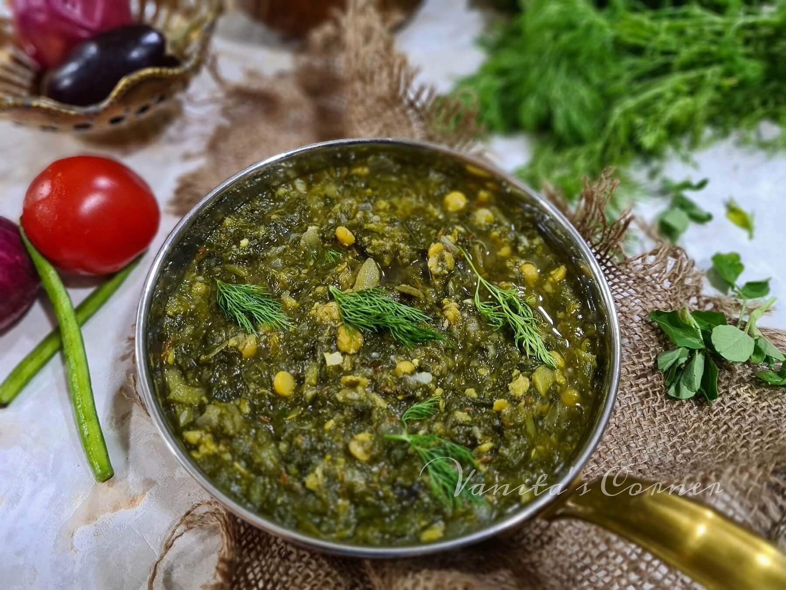

Vitamin K is a family of compounds known as quinones.
Phylloquinone: The form of vitamin K that comes from plant sources. Also known as vitamin K1.
Menaquinones: Forms of vitamin K that come from animal sources. Also produced by intestinal bacteria, they are collectively known as vitamin K2.
Menadione: A medicinal form of vitamin K that can be toxic to infants. Also known as vitamin K3.
The functions of vitamin K are primarily concerned with the blood clotting process. It brings about the translational (after protein synthesis in the cell) modification of certain blood clotting factors.
The clotting factors II (Prothrombin), VII, IX, and X are synthesized as inactive precursors (zymogens), and vitamin K is important for the carboxylation of osteocalcin, allowing it to become saturated with carboxyl groups.
Low levels of vitamin K are associated with low bone mineral density. Vitamin K is also involved in bone health and is essential for many steps in the blood clotting cascade of reactions.
Although vitamin K has a crucial role in blood clotting, the body needs only small amounts, making vitamin K deficiency rare in healthy adults. However, preliminary research suggests that typical diets supply less than optimal amounts for bone health. Low dietary vitamin K intake is associated with reduced bone density in women and has been linked to increased fracture risk.
People who suffer from fat-malabsorption syndromes, such as celiac disease, sprue, cystic fibrosis, ulcerative colitis, and Crohn's disease, can develop vitamin K deficiency. Prolonged use of antibiotics may cause a deficiency because the drugs can destroy the intestinal bacteria that produce vitamin K. Prior to surgery, a patient's vitamin K status is often tested to assess the risk for hemorrhaging because antibiotics are frequently part of the treatment regimen.
Take a pan, heat oil, and add ginger, garlic, hing, chopped onions, salt, green chilies, turmeric powder, tomatoes, bottle gourd, okra, eggplant, potatoes, and some soaked chana dal. Add spinach, fenugreek leaves, chukka kura, coriander, and dill leaves. Add salt, water, and coriander powder.
Pressure cook (2 whistles) until all the vegetables are cooked. After cooking, mash the vegetables. Serve hot.
